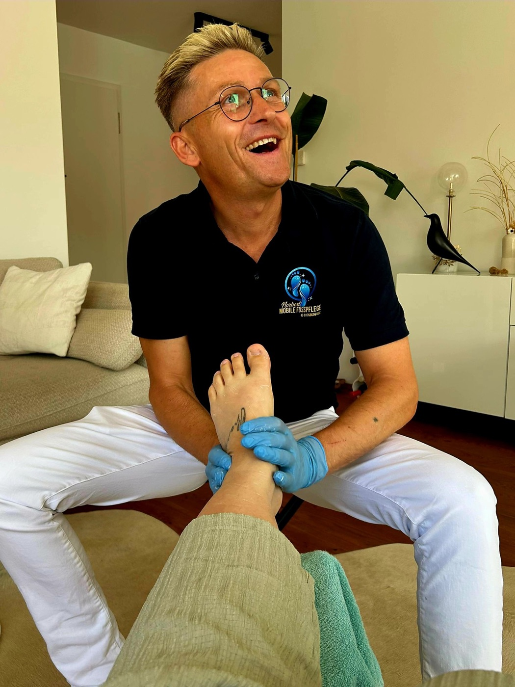

Norbert Szczepanik
Fachfußpfleger mit Herz – und mit über einem Jahrzehnt Erfahrung in der Pflege.
Mein Weg zur Fußpflege
Seit 2012 arbeite ich in der Pflege – über ein Jahrzehnt Erfahrung im achtsamen, respektvollen Umgang mit Menschen, die Unterstützung brauchen. Dabei habe ich gelernt, wie viel gepflegte Füße für Wohlbefinden, Sicherheit und Lebensqualität bedeuten.
2024 habe ich meine Ausbildung zum Fachfußpfleger abgeschlossen – in Kooperation mit der Fußpflegeschule FAY. Damit verbinde ich das Beste aus beiden Welten: fachliches Können und echte Pflegeerfahrung.
Als mobiler Fußpfleger komme ich zu Ihnen nach Hause – gerade für Menschen, denen der Weg ins Studio schwerfällt, ist das eine spürbare Erleichterung. Ich nehme mir Zeit, arbeite gründlich und lege größten Wert auf Hygiene.
Meine Stationen
Seit 2012 – Pflege
Langjährige Berufserfahrung in der Pflege: Sorgfalt, Geduld und ein sicherer, respektvoller Umgang mit Menschen.
2024 – Fachfußpfleger
Abgeschlossene Ausbildung zum Fachfußpfleger in Kooperation mit der Fußpflegeschule FAY.
Heute – mobil für Sie
Kosmetische Fußpflege als Hausbesuch – mit professioneller Ausstattung und hygienisch aufbereiteten Instrumenten.
Bilder aus meiner Arbeit
Ein paar Eindrücke – von der Ausstattung bis zur Pflege.



Lernen Sie mich kennen
Am einfachsten bei einem ersten Termin – ich freue mich auf Sie.